직업상담사-2급 (2014-03-02 기출문제)
1과목: 직업상담학
1. 인지 행동적 기법 중 예상되는 신체적 또는 정신적 긴장을 약화시켜 내담자가 충분히자신의 문제를 다룰 수 있도록 준비시키는 데 사용되는 것은?
- 근육이완훈련
- 인지적 재구조화
- 스트레스 접종
- 정서적 상상
(정답률: 66%)

2. 직업상담에서 내담자의 정보오류에 해당하는 것은?
- 삭제
- 불가능을 가정함
- 제한된 일반화
- 예외를 인정하지 않음
(정답률: 70%)
3. 직업상담에서 상담자가 고려해야 할 사항으로 틀린 것은?
- 정보제공 시기가 적절해야 한다.
- 검사결과에 대한 평가와 해석을 한 뒤 직업정보를 제공한다.
- 상담 종료 시 직업 및 진로결정도 완료되어야 한다.
- 상담 종료 시 진로계획 및 검사결과기록을 내담자가 가지고 가야 책임감도 커진다.
(정답률: 70%)
4. 사이버 직업상담 기법으로 적합하지 않은 것은?
- 질문내용 구상하기
- 핵심 진로논점 분석하기
- 진로논점 유형 정하기
- 직업정보 가공하기
(정답률: 79%)
5. 포괄적 직업상담에 관한 설명으로 틀린 것은?
- 논리적인 것과 경험적인 것을 의미 있게 절충시킨 모형이다.
- 진단은 변별적이고 역동적인 성격을 가지고 있다.
- 상담의 전반적인 진행에서 특성-요인이론과 행동주의이론으로 접근한다.
- 검사의 역할을 중시하며 검사를 효율적으로 사용한다.
(정답률: 65%)
6. 어떤 문제의 밑바닥에 깔려 있는 혼란스러운 감정과 갈등을 가려내어 분명히 해주는 것은?
- 경청
- 명료화
- 반영
- 직면
(정답률: 80%)
7. 정신분석적 상담과정에 관한 설명으로 틀린 것은?
- 심리적 장애의 근원을 과거 경험에서 찾고자 한다.
- 내담자의 유아기적 갈등과 감정을 중요하게 다룬다.
- 내담자의 무의식적 자료와 방어를 탐색하는 작업을 한다.
- 심리적 장애활동과 관련된 표준화된 자료를 활용한다.
(정답률: 74%)
8. 직업상담에서 내담자의 생애진로주제를 확인하는 가장 중요한 이유는?
- 내담자의 사고과정을 이해하고 행동을 통찰하도록 도와주기 때문이다.
- 상담을 상담자 입장에서 원만하게 이끌 수 있도록 해주기 때문이다.
- 작업자, 지도자, 개인 역할이 고려되어야 하기 때문이다.
- 내담자의 생각을 읽을 수 있게 해주기 때문이다.
(정답률: 78%)
9. 진로시간전망 검사지의 사용목적이 아닌 것은?
- 미래의 방향을 이끌어 내기 위해
- 계획에 대한 긍정적 태도를 강화하기 위해
- 현재의 행동을 미래의 결과와 연계시키기 위해
- 미래직업에 대한 지식 확장을 위해
(정답률: 74%)
10. 비합리적 신념에 대한 논박을 통해 사고와 감정의 변화를 도모하는 상담이론은?(문제 오류로 1, 4번이 정답처리된 문제인듯 합니다. 여기서는 4번을 누르셔면 정답 처리 됩니다. 자세한 내용은 해설을 참고하세요.)
- 인지 행동적 상담
- 현실치료
- 교류분석 상담
- 합리적·정서적 상담
(정답률: 60%)
11. 상담자가 자신의 바람은 물론 내담자의 느낌, 인상, 기대 등을 이해하고 이를 상담과정의 주제로 삼는 상담기법은?
- 직면
- 계약
- 즉시성
- 리허설
(정답률: 66%)
12. 직업상담의 기본 원리가 아닌 것은?
- 윤리적인 범위 내에서 상담을 전개하여야 한다.
- 산업구조변화, 직업정보, 훈련정보 등 변화하는 직업세계에 대한 이해를 토대로 이루어져야 한다.
- 각종 심리검사 결과를 기초로 합리적인 판단을 이끌어 낼 수 있어야 하지만 심리검사에 대해 과잉의존해서는 안 된다.
- 개인의 진로 혹은 직업결정에 대한 상담으로 전개되어야 하며, 자칫 의사결정능력에 대한 훈련으로 전환되지 않도록 유의한다.
(정답률: 84%)
13. 행동치료에서 문제행동에 대한 기능적 분석을 위해 문제 행동과 관련된 선행요인과 결과 간의 관계를 확인하는 데 사용할 수 있는 기법은?
- 자기강화
- 자유연상
- 자기감찰
- 자기지시
(정답률: 55%)
14. 내담자와 관련된 정보를 수집하고 내담자의 행동을 이해하고 해석하는 데 기본이 되는 상담기법이 아닌 것은?
- 왜곡된 사고 확인하기
- 한정된 오류 정정하기
- 반성의 장 마련하기
- 변명에 초점 맞추기
(정답률: 53%)
15. 초기면접에 관한 설명으로 틀린 것은?
- 내담자의 행동에 대한 평가를 하지 않는다.
- 내담자와는 최적 거리를 유지한다.
- 내담자와 자연스럽게 눈 접촉을 한다.
- 내담자가 말하는 내용 중 모호한 부분을 자세하게 설명하도록 요구한다.
(정답률: 79%)
16. 내담자의 흥미를 사정하는 질적 방법 중 직업카드분류법에 관한 설명으로 틀린 것은?
- 직업카드분류는 미국심리협회 상담심리분과에서 연설을 한 Tyler에 의해 제안되었다.
- 내담자가 카드를 분류할 때에 카드 앞면에 직업명 이외에 다른 정보를 싣지 않아야 혼란이 없다.
- 직업카드의 주요 목적은 내담자의 주제체계를 탐색하고 직업을 고르기 위한 선택장치로 고안되었다.
- 내담자가 직업카드를 분류할 때는 좋아함, 싫어함, 미결정 등 3가지로 구분한다.
(정답률: 57%)
17. 직업상담에서 내담자의 저항을 다루는 방법과 가장 거리가 먼 것은?
- 내담자와의 상담관계를 재점검한다.
- 긴장이완법을 사용한다.
- 내담자가 위협을 느끼지 않도록 한다.
- 내담자의 고통을 공감해준다.
(정답률: 60%)
18. 6개의 생각하는 모자(Six Thinking Hats) 기법에서 사용하는 모자 색깔이 아닌 것은?
- 갈색
- 녹색
- 청색
- 흑색
(정답률: 87%)
19. 직업상담의 윤리강령으로 틀린 것은?
- 직업상담사는 개인이나 사회에 임박한 위험이 있더라도 개인정보의 보호를 위하여 내담자의 정보를 누설하지 말아야 한다.
- 직업상담사는 내담자에 대한 정보를 교육장면이나 연구에 사용할 경우에는 내담자와 합의 후 사용하되 그 정체가 노출되지 않도록 한다.
- 직업상담사는 소속 기관과의 갈등이 있을 경우 내담자의 복지를 우선적으로 고려해야 한다.
- 직업상담사는 상담 관계의 형식, 방법, 목적을 설정하고 그 결과에 대하여 내담자와 협의한다.
(정답률: 84%)
20. 내담자의 생애진로주제와 이를 확인하는 데 도움이 되는 자료를 바르게 연결한 것은?
- 기술 확인 – Prediger의 분류체계
- 작업자 역할 – 자료, 관념, 사람, 사물
- 직업적 성격 및 작업환경 – Bolles의 분류체계
- 탐구적 성격 및 환경 – 상상적이고 창조적인 활동
(정답률: 63%)
2과목: 직업심리학
21. 다음은 무엇에 관한 설명인가?
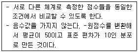
- T점수
- Z점수
- 백분율 점수
- 백분위 점수
(정답률: 71%)
22. 신뢰도가 높은 검사의 특성으로 옳은 것은?
- 공부를 잘하는 학생이 못하는 학생보다 더 좋은 점수를 받는다.
- 검사점수들이 정상분포를 이룬다.
- 한 피검사자가 동일한 검사를 반복해서 받을 때 유사한 점수를 받는다.
- 검사 문항의 난이도가 낮은 것부터 높은 것까지 골고루 분포되어 있다.
(정답률: 72%)
23. 직무분석 결과의 용도와 가장 거리가 먼 것은?
- 인사선발
- 교육 및 훈련
- 조직진단
- 직무평가
(정답률: 56%)
24. 직업전환을 원하는 내담자를 상담할 때 고려해야 할 사항과 가장 거리가 먼 것은?
- 나이와 건강을 고려해야 한다.
- 부모의 기대와 아동기 경험을 분석한다.
- 직업을 전환하는 데 동기화가 되어 있는지 알아본다.
- 직업을 전환하는 데 필요한 기술을 가지고 있는지 평가해야 한다.
(정답률: 80%)
25. 조직구성원의 경력개발을 위하여 전문가로부터 개인의 능력, 성격, 기술 등에 대해 종합적인 평가를 받는 프로그램은?
- 평가기관(Assessment Center)
- 경력자원기관(Career Resource Center)
- 경력워크숍(Career Workshop)
- 경력연습책자(Career Workbook)
(정답률: 72%)
26. 진로발달에 관한 설명으로 옳은 것은?
- 진로발달을 위한 계획이 일단 수립되면 끝까지 고수해야 한다.
- 진로발달이란 직업정체성을 구체화하고 직업기회를 발전시키는 것이다.
- 직업발달의 단계를 대체로 소양-탐색-준비-인식-확정 순으로 구분한다.
- 진로발달이란 주로 직종에 대한 다양한 조사, 견학, 현장실습의 기회를 갖는 것이다.
(정답률: 73%)
27. 직업상담 장면에서 활용 가능한 성격검사에 관한 설명으로 옳은 것은?
- 특정 분야에 대한 흥미를 측정한다.
- 어떤 특정 분야나 영역의 숙달에 필요한 적응능력을 측정한다.
- 대개 자기보고식 검사이며 널리 이용되는 검사는 다면적 인성검사(MMPI), 성격유형검사(MBTI)등이 있다.
- 비구조적 과제를 제시하고 자유롭게 응답하도록 하여 분석하는 방식으로 웩슬러 검사가 있다.
(정답률: 70%)
28. 신뢰도 계수에 관한 설명으로 틀린 것은?
- 신뢰도 계수는 개인차가 클수록 커진다.
- 신뢰도 계수는 문항 수가 증가함에 따라 정비례 하여 커진다.
- 신뢰도 계수는 신뢰도 추정방법에 따라서 달라질 수 있다.
- 신뢰도 계수는 결과의 일관성을 보여주는 값이다.
(정답률: 68%)
29. 미네소타 직업분류체계 III 와 관련하여 발전한 직업발달이론은?
- Krumboltz의 사회학습이론
- Super의 평생발달이론
- Ginzberg의 발달이론
- Lofquist와 Dawis의 직업적응이론
(정답률: 76%)
30. 다음 사례는 사회학습이론이 제시한 진로발달과정의 어떤 요인과 밀접하게 관련되는가?
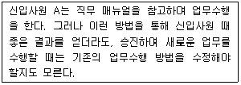
- 유전적 요인과 특별한 능력
- 직무적성
- 학습경험
- 과제접근기술
(정답률: 75%)
31. Selye가 제시한 스트레스의 단계에 해당하지 않는 것은?
- 경계단계(Alarm Stage)
- 저항단계(Resistance Stage)
- 재발단계(Recurrence Stage)
- 탈진단계(Exhaustion Stage)
(정답률: 80%)
32. Maslow 욕구위계이론의 기본 가정에 해당하는 것은?
- 한 개인이 얼마나 동기화되는 가는 타인이 기울인 노력과 자신이 기울인 노력의 비교를 통해 결정된다.
- 모든 동기는 학습된다.
- 직무만족을 결정하는 요인들과 직무 불만족을 결정하는 요인들은 질적으로 서로 다르다.
- 인간은 특정한 형태의 충족되지 못한 욕구들을 만족시키기 위하여 동기화되어 있다.
(정답률: 73%)
33. 다음과 같은 특징을 가지는 Super의 진로 발달 단계는?
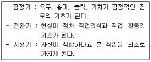
- 성장기
- 탐색기
- 확립기
- 유지기
(정답률: 67%)
34. 한 연구자가 검사를 개발한 후 요인분석을 통해 그 검사가 검사개발의 토대가 되는 이론을 잘 반영하는 지를 확인하였는데 이 과정은 무엇을 확인하기 위한 것인가?
- 내용타당도
- 동시타당도
- 준거타당도
- 구성타당도
(정답률: 65%)
35. 스트레스에 관한 Ellis의 설명이 아닌 것은?
- 정서장애는 생활사건 자체를 통해 일어난다.
- 행동에 대한 과거의 영향보다는 현재에 초점을 둔다.
- 역기능적 사고는 정서장애의 중요한 결정 요인이다.
- 부정적 감정을 유발하는 스트레스는 비합리적 신념에서 나온다.
(정답률: 54%)
36. 진로발달을 직업정체감의 형성과정으로 본 학자는?
- Ginzberg
- Parsons
- Tiedeman
- Strong
(정답률: 62%)
37. 새로 입사한 70명의 신입사원들에 대한 적성검사의 타당도 계수가 0.50이었다. 만일, 입사하지 못한 사람들도 포함해서 모든 응시자를 대상으로 한다면, 이 검사의 타당도 계수는?
- 높아진다.
- 낮아진다.
- 동일하다.
- 변하지만 그 방향은 예측할 수 없다.
(정답률: 63%)
38. 직무 스트레스를 조절하는 변인과 가장 거리가 먼 것은?
- 성격의 유형
- 역할 모호성
- 통제의 위치
- 사회적 지원
(정답률: 59%)
39. 다음 사례에서 A에게 해당하는 Holland의 직업성격 유형은?
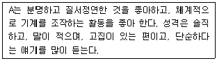
- 탐구적(Investigative)
- 사회적(Social)
- 현실적(Realistic)
- 관습적(Conventional)
(정답률: 79%)
40. 직위분석질문지(PAQ)에 대한 설명으로 틀린 것은?
- 작업자 중심 직무분석의 대표적인 예이다.
- 직무수행에 필요한 인간의 특성들을 기술하는데 사용되는 194개의 문항으로 구성되어 있다.
- 직무수행에 관한 6가지 주요 범주는 정보입력, 정신과정, 작업결과, 타인들과의 관계, 직무맥락, 직무요건 등이다.
- 비표준화된 분석도구이다.
(정답률: 77%)
3과목: 직업정보론
41. 직업정보 수집시의 유의점으로 틀린 것은?
- 명확한 목표를 세운다.
- 직업정보는 계획적으로 수집하여야 한다.
- 자료를 수집하면 자료의 출처와 저자, 발행연도와 수집일자를 기입해야 한다.
- 수집한 모든 자료는 별도 보관하여 활용하도록 한다.
(정답률: 74%)
42. 한국표준직업분류에서 “빵을 굽는 제빵원이 빵을 제조하고 이를 판매하였다면 판매원으로 구분하지 않고 제빵원으로 분류한다.”가 해당되는 직업분류 원칙은?
- 생산업무 우선 원칙
- 최상급 직능수준 우선 원칙
- 최초 업무 우선 원칙
- 주된 업무 우선 원칙
(정답률: 67%)
43. 한국고용정보원(www.keis.or.kr)에서 제공하는 통계간행물이 아닌 것은?
- 직업능력개발 통계연보
- 고용보험통계 현황
- 워크넷 구인 · 구직 및 취업동향
- 고용동향분석
(정답률: 38%)
44. 워크넷(구인) 인재정보 검색에 관한 설명으로 틀린 것은?(관련 규정 개정전 문제로 여기서는 기존 정답인 3번을 누르면 정답 처리됩니다. 자세한 내용은 해설을 참고하세요.)
- 최대 5개의 희망직종 선택이 가능하다.
- 희망임금은 연봉, 월급, 일급, 시급별로 최소금액과 최대금액을 직접 입력할 수 있다.
- 학력은 전체, 고졸이하, 대졸(2~4년), 석/박사 항목 중에서 선택할 수 있도록 구분되어 있다.
- 교대근무여부, 고용형태, 장애여부도 검색조건에 해당한다.
(정답률: 68%)
45. 한국직업사전의 제공 정보 중 직무기능(DPT)에 대한 설명으로 틀린 것은?
- 직무기능은 해당 직업종사자가 직무를 수행하는 과정에서 자료(Data), 사람(People), 사물(Thing)과 맺는 관련된 특성을 나타낸다.
- 사람(People)의 기능은 자문, 협의, 교육, 감독, 오락제공, 설득, 말하기-신호, 서비스제공 등을 포함하여 위계적 관계가 명확한 활동이다.
- 사물(Thing)의 기능은 작업자가 기계와 장비를 가지고 작업하는지 혹은 기계와 관련 없는 도구와 작업보조구를 가지고 작업하는지를 기초로 하여 분류한다.
- 자료(Data)와 관련된 기능은 정보, 지식, 개념 등 세 가지 종류의 활동으로 배열되어 있다.
(정답률: 61%)
46. 워크넷 구인 · 구직 및 취업 동향에서 사용하는 용어해설로 틀린 것은?
- 제시임금 : 구인자가 구직자에게 제시하는 임금
- 희망임금 : 구직자가 구인업체에 요구하는 임금
- 희망임금충족률 : (제시임금÷희망임금) × 100
- 구인배율 : 신규구직건수 ÷ 신규구인인원
(정답률: 65%)
47. 한국표준산업분류에서 통계단위의 산업결정방법에 관한 설명으로 틀린 것은?
- 생산단위의 산업활동은 그 생산단위가 수행하는 주된 산업활동의 종류에 따라 결정된다.
- 단일사업체의 보조단위는 그 사업체의 일개 부서로 포함한다.
- 계절에 따라 정기적으로 산업을 달리하는 사업체의 경우에는 조사시점에 경영하는 사업으로 분류된다.
- 휴업 중 또는 자산을 청산중인 사업체의 산업은 영업 중 또는 청산을 시작하기 전의 산업활동에 의하여 결정한다.
(정답률: 76%)
48. 다음은 무엇에 대한 설명인가?
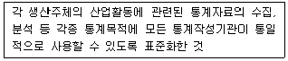
- 표준생산분류
- 표준산업분류
- 표준직업분류
- 표준직무분류
(정답률: 80%)
49. 한국표준직업분류에서 포괄적인 업무에 대한 직업분류 원칙에 해당하지 않는 것은?
- 최상급 직능수준 우선의 원칙
- 취업시간 우선의 원칙
- 생산업무 우선의 원칙
- 주된 직무 우선의 원칙
(정답률: 73%)
50. 직업정보 조사를 위한 설문지 작성법으로 틀린 것은?
- 이중질문은 피한다.
- 조사주제와 직접 관련이 없는 문항은 줄인다.
- 응답률을 높이기 위해 민감한 질문은 앞에 배치한다.
- 응답의 고정반응을 피하도록 질문형식을 다양화한다.
(정답률: 85%)
51. 흥미 유형에서 본 항목 및 정의에 관한 설명으로 틀린 것은?
- 사회형 – 정해진 원칙과 계획에 따라 자료들을 기록, 정리, 조직하는 일을 좋아하고, 체계적인 직업환경에서 사무적, 계산적 능력을 발휘하는 활동들에 흥미를 보인다.
- 탐구형 – 분석적이고 호기심이 많고 조직적이며 정확한 반면, 흔히 리더십 기술이 부족하다.
- 예술형 – 변화와 다양성을 좋아하고 틀에 박힌 것을 싫어하며, 모호하고, 자유롭고, 상징적인 활동들에 흥미를 보인다.
- 진취형 – 조직의 목적과 경제적인 이익을 억기 위해 타인을 선도, 계획, 통제, 관리하는 일과 그 결과로 얻어지는 위신, 인정, 권위에 흥미를 보인다.
(정답률: 79%)
52. 직업정보관리에 관한 설명으로 틀린 것은?
- 직업정보의 범위는 개인에 대한 정보, 직업에 대한 정보, 미래에 대한 정보 등으로 구성되어 있다.
- 직업정보원은 정부부처, 정부투자출연기관, 단체 및 협회, 연구소, 기업과 개인 등이 있다.
- 직업정보 가공시에는 전문적인 지식이 없이도 이해할 수 있도록 가급적 평이한 언어로 제공되어야 하며 직무의 장 · 단점을 편견 없이 제공하여야 한다.
- 개인의 정보는 보호되어야 하기 때문에 구직시에 연령, 학력 및 경력 등의 취업과 관련된 정보는 제한적으로 제공되어야 한다.
(정답률: 67%)
53. 민간직업정보의 일반적인 특징과 가장 거리가 먼 것은?
- 한시적으로 정보가 수집 및 가공되어 제공된다.
- 객관적인 기준을 가지고 전체 직업에 관한 일반적인 정보를 제공한다.
- 직업정보 제공자의 특정한 목적에 따라 직업을 분류한다.
- 통상적으로 직업정보를 유료로 제공한다.
(정답률: 80%)
54. 다음은 어떤 국가기술자격 등급의 검정기준에 해당하는가?
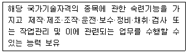
- 기능사
- 산업기사
- 기사
- 기능장
(정답률: 68%)
55. 국가기술자격 산업기사 응시조건으로 틀린 것은?
- 응시하려는 종목이 속하는 동일 및 유사 직무분야에서 1년 이상 실무에 종사한 사람
- 관련학과의 2년제 또는 3년제 전문대학졸업자등 또는 그 졸업예정자
- 고용노동부령에 정하는 기능경기대회 입상자
- 응시하려는 종목이 속하는 동일 및 유사 직무분야의 다른 종목의 산업기사 등급 이상의 자격을 취득한 사람
(정답률: 73%)
56. 직업정보를 전달하는 유형별 특징에 관한 다음 표（ )에 들어갈 알맞은 것은?
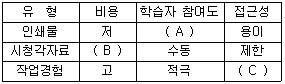
- A – 수동, B – 고, C – 제한
- A – 수동, B – 고, C – 적극
- A – 적극, B – 저, C – 제한
- A – 적극, B – 저, C – 적극
(정답률: 74%)
57. 다음 고용안정사업 중 고용조정지원에 해당하지 않는 것은?
- 고용유지지원금
- 전직지원장려금
- 재고용장려금
- 교대제전환지원금
(정답률: 46%)
58. 한국표준산업분류에서 산업분류의 적용원칙에 관한 설명으로 틀린 것은?
- 생산단위는 산출물뿐만 아니라 투입물과 생산공정 등을 함께 고려하여 그들의 활동을 가장 정확하게 설명된 항목에 분류해야 한다.
- 복합적인 활동단위는 우선적으로 세세분류단계를 정확히 결정하고, 순차적으로 세, 소, 중 단계항목을 결정하여야 한다.
- 동일단위에서 제조한 재화의 소매활동은 별개활동으로 파악되지 않고 제조활동으로 분류되어야 한다. 그러나 자기가 생산한 재화와 구입한 재화를 함께 판매한다면 그 주된 활동에 따라 분류한다.
- “공공행정 및 국방, 사회보장사무”이외의 다른 산업활동을 수행하는 정부기관은 그 활동의 성질에 따라 분류하여야 한다.
(정답률: 75%)
59. 워크넷（직업·진로)에서 제공하는 학과정보에 관한 설명으로 틀린 것은?
- 학과별로 진출분야정보를 제공한다.
- 학과별로 관련직업정보를 제공한다.
- 학과별 취득자격은 민간자격정보를 제외한 국가자격정보만 제공한다.
- 학과별 개설대학 홈페이지로 바로 연결될 수 있는 링크를 제공한다.
(정답률: 75%)
60. 직업상담시 제공하는 직업정보의 기능과 역할에 대한 설명으로 틀린 것은?
- 여러 가지 직업적 대안들의 정보를 제공한다.
- 내담자의 흥미, 적성, 가치 등을 파악하는 것이 직업정보의 주기능이다
- 경험이 부족한 내담자에게 다양한 직업들을 간접적으로 접할 기회를 제공한다.
- 내담자가 자신의 선택이 현실에 비추어 부적당한 선택이었는지를 점검하고 재조정해 볼 수 있는 기초를 제공한다.
(정답률: 60%)
4과목: 노동시장론
61. 독점 상품시장과 완전경쟁 노동시장에서 기업의 균형 고용 조건은?
- 임금과 총수입이 일치한다.
- 임금과 총비용이 일치한다.
- 임금과 한계수입생산이 일치한다.
- 임금과 한계생산물가치가 일치한다.
(정답률: 44%)
62. 다음 중 연공임금제도의 장점이 아닌 것은?
- 고용안정을 달성할 수 있다.
- 근로자의 기업에 대한 귀속의식을 고양시킬 수 있다.
- 폐쇄적인 노동시장에서 인력관리가 용이하다.
- 전문기술인력의 확보가 용이하다.
(정답률: 64%)
63. 직업탐색에 관한 설명으로 틀린 것은?
- 직업탐색의 비용은 구직활동을 위해 투입한 교통비, 통신요금 등의 직접적 비용만을 의미한다.
- 직업탐색은 자기의 기준을 충족시켜주는 가장 좋은 조건의 일자리를 찾는 활동을 말한다.
- 직업탐색은 한계기대수익과 한계비용이 같아질 때까지 계속된다.
- 중년층에 비해 청년층은 평생소득의 관점에서 보면 직업탐색의 기대소득이 크다.
(정답률: 72%)
64. 최저임금이 적용되는 근로자의 총소득이 최저임금 인상으로 증가되었을 경우 노동수요의 임금탄력성은?
- 탄력적임
- 비탄력적임
- 단위탄력적임
- 불확실함
(정답률: 48%)
65. 다음 중 노동정책이나 제도에 관한 설명으로 틀린 것은?
- 소득정책은 근로자들의 소득을 증진시키기 위한 정책이다.
- 직업훈련정책은 주로 구조적 실업 문제를 해결하기 위한 정책이다.
- 최저임금제는 저임금근로자의 생활안정을 위한 것이다.
- 알선은 노사자율적 해결을 강조하는 노동쟁의 조정제도이다.
(정답률: 49%)
66. 다음 중 노동조합의 조직률을 하락시키는 요인이 아닌 것은?
- 외국인 근로자 비율의 증가
- 국내 산업보호를 위한 수입관세 인상
- 서비스업으로의 산업구조 변화
- 노동자의 기호와 가치관의 변화
(정답률: 70%)
67. 노동공급에 관한 설명으로 틀린 것은?
- 노동공급은 노동자가 일정 기간 동안 판매하고자 하는 노동의 양을 의미하며 유량(Flow)의 개념이다.
- 노동공급을 결정하는 요인으로서 인구는 양적인 규모뿐만 아니라 연령별, 지역별, 질적 구조도 중요한 의미를 갖는다.
- 효용극대화에 기초한 노동공급모형에서 대체효과가 소득효과보다 클 경우 임금의 상승은 노동공급을 감소시키고 노동공급곡선은 후방으로 굴절된다.
- 사회보장급여의 수준이 지나치게 높을 경우 노동공급에 대한 동기유발이 저해되어 총 노동공급이 감소된다.
(정답률: 65%)
68. 기업의 종업원 주식소유제 또는 종업원 지주제 도입의 목적이 아닌 것은?
- 새로운 일자리 창출
- 기업재무구조의 건전화
- 종업원에 의한 기업인수로 고용안정 도모
- 공격적 기업 인수 및 합병에 대한 효과적 방어 수단으로 활용
(정답률: 76%)
69. 다음 표를 이용하여 실업률을 계산하면 얼마인가?(단, 소수점 셋째 자리에서 반올림)
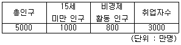
- 5.00%
- 6.25%
- 6.33%
- 6.67%
(정답률: 70%)
70. 경기침체로 실업자가 직장을 구하는 것이 더욱 어렵게 되어 구직활동을 단념함으로써 비경제활동인구가 늘어나고 경제활동인구가 감소하는 것은?
- 실망노동자효과
- 부가노동자효과
- 대기실업효과
- 추가실업효과
(정답률: 77%)
71. 다음 그림에서 노동시장이 수요독점인 경우 임금과 고용량은?(단, D와 S는 각각 노동의 수요곡선과 공급곡선, 그리그 MFC는 한계요소비용으로 노동의 한계비용을 의미한다.)
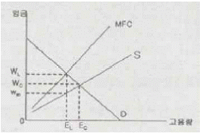
- WL, EL
- WC, EC
- WL, EC
- WM, EL
(정답률: 55%)
72. 다음 중 노동공급탄력성에 영향을 미치는 요인을 모두 짝지은 것은?
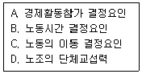
- A, B
- A, B, C
- B, C, D
- A, B, C, D
(정답률: 70%)
73. 다음 중 내부노동시장이 강화될 가능성이 가장 높은 상황은?
- 고용형태가 다양화되고 있다.
- 구조조정이 급속히 이루어지고 있다.
- 기업특수적 인적자본의 형성이 중시된다.
- 급속한 기술변화롤 제품의 수명이 단축되고 수요가 안정적이지 않다.
(정답률: 66%)
74. 다음 중 생산성을 향상시키는 요인과 가장 거리가 먼 것은?
- 노동조합 조합원 수의 증가
- 자본 절약적 기술혁신
- 자본의 질적 증가
- 노동의 질적 향상
(정답률: 72%)
75. 노동조합이 노동공급을 제한함으로써 발생할 수 있는 효과로 옳은 것은?
- 노동조합이 조직화된 노동시장의 임금이 하락할 것이다.
- 노동조합이 조직화되지 않은 노동시장의 공급곡선이 좌상향으로 이동할 것이다.
- 노동조합이 조직화된 노동시장의 노동수요곡선이 우상향으로 이동할 것이다.
- 노동조합이 조직화되지 않은 노동시장의 임금이 하락할 것이다.
(정답률: 48%)
76. 베버리지 곡선（Beveridge Curve）이 원점에서 멀어질 때 발생하는 실업의 유형은?
- 구조적 실업
- 마찰적 실업
- 경기적 실업
- 계절적 실업
(정답률: 57%)
77. 보상적 임금격차이론에 관한 설명으로 틀린 것은?
- 위험한 직업에는 높은 임금이 지급된다.
- 정부의 안전에 관한 규제가 항상 근로자에게 이로운 것은 아니다.
- 기업의 산재위험에 관한 도덕적 해이는 산재보험에 의해 감소된다.
- 보상적인 임금격차가 적절하게 기능한다면 3D 업종의 구인난이 해소될 수 있다.
(정답률: 69%)
78. 파업의 경제적 비용과 기능에 관한 설명으로 옳은 것은?
- 사적비용과 사회적 비용은 동일하다.
- 사용자의 사적비용은 직접적인 생산중단에서 오는 이윤의 순감소분과 같다
- 사적비용이란 경제의 한 부문에서 발생한 파업으로 인한 타 부문에서의 생산 및 소비의 감소를 의미한다.
- 파업에 따른 사회적 비용이 가장 큰 분야는 서비스 산업부문이다.
(정답률: 72%)
79. 소득정책의 효과에 대한 설명으로 틀린 것은?
- 성장산업의 위축을 초래할 수 있다.
- 행정적 관리비용을 절감할 수 있다.
- 임금억제에 이용될 가능성이 크다.
- 급격한 물가상승기에 일시적으로 사용하면 효과를 거둘 수 있다.
(정답률: 66%)
80. 다음 중 임금교섭 이전 노동조합의 전략을 바르게 짝지은 것은?
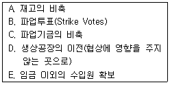
- A, B, D
- A, C, E
- B, C, D
- B, C, E
(정답률: 67%)
5과목: 노동관계법규
81. 고용상 연령차별금지 및 고령자고용촉진에 관한 법률상 고령자인재은행으로 지정된 직업안정법에 따른 무료직업소개사업을 하는 비영리법인의 사업범위에 해당하지 않는 것은?
- 고령자의 직업능력개발훈련
- 고령자에 대한 구인 · 구직 등록
- 고령자에 대한 직업지도 및 취업알선
- 취업희망 고령자에 대한 직업상담 및 정년퇴직자의 재취업 상담
(정답률: 66%)
82. 다음（ )에 알맞은 것은?
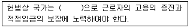
- 법률적 방법
- 사회적 방법
- 경제적 방법
- 사회적 · 경제적 방법
(정답률: 66%)
83. 다음（ )에 알맞은 것은?(관련 규정 개정전 문제로 여기서는 기존 정답인 4번을 누르면 정답 처리됩니다. 자세한 내용은 해설을 참고하세요.)
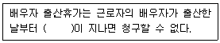
- 10일
- 15일
- 20일
- 30일
(정답률: 73%)
84. 고용정책기본법상 운영의 기본원칙이 아닌 것은?
- 근로자의 직업선택의 자유 존중
- 국가의 주도적인 고용안정역할 보장
- 근로자의 근로의 권리 확보
- 사업주의 고용관리에 관한 자율성 존중
(정답률: 69%)
85. 고용보험법상 피보험자격의 취득일과 상실일에 관한 설명으로 틀린 것은?
- 피보험자가 사망한 경우에는 사망한 날의 다음 날에 피보험자격을 상실한다.
- 적용 제외 근로자였던 자가 고용보험법의 적용을 받게 된 경우 그 사업에 고용된 날에 피보험 자격을 취득한 것으로 본다.
- 보험료징수법에 따른 보험관계 성립일 전에 고용된 근로자의 경우 그 보험관계가 성립된 날 피보험자격을 취득한 것으로 본다.
- 피보험자가 적용 제외 근로자에 해당하게 된 경우 그 적용 제외 대상자가 된 날 피보험자격을 상실한다.
(정답률: 60%)
86. 근로자직업능력개발법상 직업능력개발훈련교사의 양성을 위한 훈련과정에 해당하지 않는 것은?
- 양성훈련과정
- 향상훈련과정
- 전직훈련과정
- 교직훈련과정
(정답률: 51%)
87. 고용상 연령차별금지 및 고령자고용촉진에 관한 법령상 운수업의 고령자 기준고용률은?
- 그 사업장의 상시근로자수의 100분의 2
- 그 사업장의 상시근로자수의 100분의 3
- 그 사업장의 상시근로자수의 100분의 5
- 그 사업장의 상시근로자수의 100분의 6
(정답률: 75%)
88. 고용정책기본법령상 실업대책사업에 관한 설명으로 틀린 것은?
- 고용노동부장관은 관계 중앙행정기관의 장과 협의하여 실업대책사업을 실시할 수 있다.
- 실업자에 대한 생계비, 생업자금, 사회보험료, 의료비 등의 지원을 실시할 수 있다.
- 실업예방 등 고용안정을 위한 사업을 하는 자에 대한 지원을 실시할 수 있다.
- 실업자로 보는 무급휴직자는 3개월 이상의 기간을 정하여 무급으로 휴직하는 자를 말한다.
(정답률: 65%)
89. 근로기준법상의 근로시간, 휴게 및 휴일에 관한 규정이 모두 적용되지 않는 근로자는?
- 백화점매장에서 아르바이트하는 학생
- 자동차 경정비센터에서 일을 배우고 있는 자
- 기밀을 취급하는 업무에 종사하는 근로자
- 자동차판매회사의 외근사원
(정답률: 63%)
90. 직업안정법에 관한 설명으로 틀린 것은?
- 누구든지 어떠한 명목으로든 구인자로부터 그 모집과 관련하여 금품을 받거나 그 밖의 이익을 취하여서는 아니 된다.
- 누구든지 국외에 취업할 근로자를 모집한 경우에는 고용노동부장관에게 신고하여야 한다.
- 누구든지 고용노동부장관의 허가를 받지 아니하고는 근로자공급사업을 하지 못한다.
- 누구든지 성별, 연령, 종교, 신체적 조건, 사회적 신분 또는 혼인 여부 등을 이유로 직업소개 또는 직업지도를 받거나 고용관계를 결정할 때 차별대우를 받지 아니한다.
(정답률: 41%)
91. 근로자직업능력개발법상 재해 위로금에 관한 설명으로 틀린 것은?
- 직업능력개발훈련으로 인하여 재해를 입은 사람 중 산업재해보상보험법을 적용받는 사람은 재해 위로금을 지급하지 아니한다.
- 위탁에 의하여 실시하는 직업능력개발훈련의 훈련생에 대하여는 그 위탁자가 재해 위로금을 부담한다.
- 수탁자의 귀책사유로 인하여 재해가 발생한 경우 위탁자는 수탁자에게 구상권을 행사할 수 있다.
- 재해 위고금의 지급기준은 대통령령으로 정한다.
(정답률: 39%)
92. 고용상 연령차별금지 및 고령자고용촉진에 관한 법률상 연령차별에 관한 설명으로 옳은 것은?
- 직무의 성격상 특정 연령 기준이 불가피하게 요구되는 경우라도 연령에 따라 차등하는 경우 연령차별에 해당한다.
- 적법한 근로계약, 취업규칙, 단체협약이라 하더라도 정년을 설정하면 연령차별에 해당한다.
- 근속기간의 차이로 인한 임금, 복리후생에서의 차등은 합리적이라 하더라도 연령차별에 해당된다.
- 관계 법률에 따른 특정 연령집단의 고용유지 · 촉진을 위한 지원 조치를 하는 경우는 연령차별에 해당하지 않는다.
(정답률: 66%)
93. 직업안정법상 직업안정기관의 장의 권한 또는 의무에 해당하지 않는 것은?
- 고용서비스 우수기관을 인증하는 일
- 구직신청의 내용이 법령을 위반한 경우, 그 구직신청의 수리를 거부함에 있어서 구직자에게 그 이유를 설명하는 일
- 구직자가 고용보험법 규정에 의한 구직급여의 수급자격을 확인하여 수급자격이 있다고 인정되는 경우에는 구직급여 지급을 위하여 필요한 조치를 취하는 일
- 학생 또는 직업훈련생 등에 대하여 직업적성검사 및 집단상담 등을 통하여 직업선택에 필요한 지도를 하는 일
(정답률: 49%)
94. 다음 중 헌법상 보장된 쟁의행위로 볼 수 없는 것은?
- 파업
- 태업
- 직장패쇄
- 보이콧
(정답률: 72%)
95. 근로지준법상 취업규칙에 반드시 기재하여야 하는 사항이 아닌 것은?
- 업무의 시작시간
- 임금의 산정기간
- 근로자의 식비부담
- 근로계약기간
(정답률: 59%)
96. 다음（ )에 알맞은 것은?
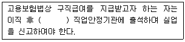
- 14일 이내에
- 7일 이내에
- 3일 이내에
- 지체 없이
(정답률: 62%)
97. 근로기준법상 여성과 연소근로자에 대한 특별보호에 관한 설명으로 옳은 것은?
- 13세 이상 15세 미만인 자라도 고용노동부장관이 발급한 취직인허증을 지닌 자는 근로자로 사용할 수 있다.
- 사용자는 18세 이상의 여성에게 야간근로를 시키고자 하는 경우에는 고용노동부장관의 인가를 얻어야 한다.
- 임신 중의 여성근로자에 대하여 출산전후 휴가부여일수는 60일이다.
- 임신 중의 여성근로자가 사산한 경우에는 청구하여도 보호휴가를 부여하지 않아도 된다.
(정답률: 63%)
98. 남녀고용평등과 일 · 가정 양립 지원에 관한 법률상 육아휴직에 관한 설명으로 틀린 것은?
- 육아휴직기간은 1년 이내로 한다
- 육아휴직기간은 근속기간에 포함되지 않는다.
- 생후 1년 미만 된 영유아가 있는 근로자는 그 영유아의 양육을 위하여 육아휴직을 신청할 수 있다.
- 사업주는 육아휴직을 마친 후에는 휴직 전과 같은 업무 또는 같은 수준의 임금을 지급하는 직무에 복귀시켜야 한다.
(정답률: 74%)
99. 고용보험법상 심사 및 재심사 청구의 대상이 되는 것은?
- 보험료 징수처분
- 피보험자격의 취득 · 상실에 대한 확인
- 고용안정사업에 관한 처분
- 직업능력개발사업에 관한 처분
(정답률: 57%)
100. 남녀고용평등과 일 · 가정 양립 지원에 관한 법률의 목적으로 법률이 직접 명시하고 있지 않은 것은?
- 헌법의 평등이념
- 근로여성의 보호
- 모성 보호
- 모든 국민의 삶의 질 향상
(정답률: 43%)